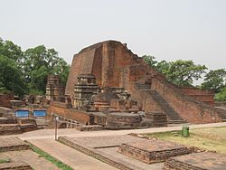
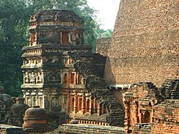

India's First University - NALANDA UNIVERSITY

Nalanda (Nālandā, pronounced [naːlən̪d̪aː]) was a renowned Buddhist monastic university in ancient Magadha
(modern-day Bihar), India.[5][6] Considered by historians[citation needed] to be the world's very first residential
university, and among the greatest centers of learning in the ancient world, it was located near the city of
Rajagriha (now Rajgir) and about 90 kilometres (56 mi) southeast of Pataliputra (now Patna), operating from 427 to
1197 CE.[7][8]
Nalanda was established during the Gupta Empire era,[9] and was supported by numerous Indian and Javanese patrons –
both Buddhists and non-Buddhists.[10][11] Over some 750 years, its faculty included some of the most revered
scholars of Mahayana Buddhism. Nalanda Mahavihara taught six major Buddhist schools and philosophies such as
Yogacara and Sarvastivada as well as subjects such as grammar, medicine, logic and mathematics.[12] The university
was also a major source of the 657 Sanskrit texts carried by pilgrim Xuanzang and the 400 Sanskrit texts carried by
Yijing to China in the 7th-century, which influenced East Asian Buddhism.[13] Many of the texts composed at Nalanda
played an important role in the development of Mahayana and Vajrayana Buddhism including the Mahavairocana Tantra
and the Bodhisattvacaryāvatāra of Shantideva.[14][15] It was sacked and destroyed by the troops of Muhammad bin
Bakhtiyar Khalji, partly restored thereafter, and continued to exist till about 1400 CE.[12] Today, it is a UNESCO
World Heritage Site.[16]
In 2010, the Government of India passed a resolution to revive the famous university, and a contemporary institute,
Nalanda University, was established at Rajgir.[17] It has been listed as an "Institute of National Importance" by
the Government of India.[18]
Location
Nalanda is about 16 kilometres (10 mi) north of the city of Rajgir and about 90 kilometres (56 mi) southeast of
Patna, connected via NH 31, 20 and 120 to India's highway network.[6] It is about 80 kilometres (50 mi) northeast of
Bodhgaya – another important Buddhist site in Bihar. The Nalanda archaeological site is spread over a large area to
the northwest of Bargaon (Nalanda) village, and is between the historical manmade lakes Gidhi, Panashokar and
Indrapuskarani. On the south bank of the Indrapushkarani lake is the Nava Nalanda Mahavihara – a university founded
in its memory.[19][20]
Etymology
According to the early 7th-century Tang Dynasty Chinese pilgrim, Xuanzang, the local tradition explains that the
name Nālandā (Hindi/Magahi: नालन्दा) came from a Naga – serpent deity in Indian religions – whose name was Nalanda.
He offers an alternate meaning "charity without intermission", from "na-alam-da"; however, this split does not mean
this.[21] Hiranand Sastri, an archaeologist who headed the excavation of the ruins, attributes the name to the
abundance of nālas (lotus-stalks) in the area and believes that Nalanda would then represent the giver of
lotus-stalks.[22]
In some Tibetan sources, including the 17th-century work of Taranatha, Nalanda is referred to as Nalendra, and is
likely synonymous with Nala, Nalaka, Nalakagrama found in Tibetan literature.[23][24][25]
History
Early history of the city of Nalanda (1200 BCE–300 CE)
The history of Nalanda in the 1st-millennium BCE is linked to the nearby city of Rajagriha (modern Rajgir) – the
capital of Magadha and on the trade routes of ancient India.[26] Early Buddhist texts state that Buddha visited a
town near Rajagriha called Nalanda on his preregrinations.[12] He delivered lectures in a nearby mango grove named
Pavarika and one of his two chief disciples, Shariputra, was born in the area and later attained nirvana
there.[27][28] These Buddhist texts were written down centuries after the death of the Buddha, are not consistent in
either the name or the relative location. For example, texts such as the Mahasudassana Jataka states that Nalaka or
Nalakagrama is about a yojana (10 miles) from Rajagriha, while texts such as Mahavastu call the place
Nalanda-gramaka and place it half a yojana away.[23] A Buddhist text Nikayasamgraha does state that emperor Ashoka
established a vihara (monastery) at Nalanda. However, archaeological excavations so far have not yielded any
monuments from Ashoka period or from another 600 years after his death.[7][29]
The Jaina text Sutrakritanga in chapter 2.7 states that Nalanda is a "suburb" of capital Rajagriha, has numerous
buildings, and this is where Mahavira (6th/5th century BCE) spent fourteen varshas – a term that refers to a
traditional retreat during monsoons for the monks in Indian religions. This is corroborated in the Kalpasutra,
another cherished text in Jainism. However, other than the mention of Nalanda, Jaina texts do not provide further
details, nor were they written down for nearly a millennium after Mahavira's death. Like the Buddhist texts, this
has raised questions about reliability and whether the current Nalanda is same as the one in Jaina texts.[7]
According to Scharfe, though the Buddhist and Jaina texts generate problems with place identification, it is
"virtually certain" that the modern Nalanda is near or the site these texts are referring to.[30]
Archaeological excavations at sites near Nalanda, such as the Juafardih site about 3 kilometers away, have yielded
black ware and other items. These have been carbon dated to about 1200 BCE. This suggests that the region around
Nalanda in Magadha had a human settlement centuries before the birth of the Mahavira and the Buddha.[31]
Faxian visit (399–412 CE)
When Faxian, also referred to as Fa-hsien, visited the city of Nalanda, there probably was no university yet.
Faxian was a Chinese Buddhist pilgrim monk who came to India to acquire Buddhist texts and left a ravelogue. He
spent 10 years in India in early 5th-century, inspired other Chinese and Korean Buddhists to visit India over the
centuries, and visited major Buddhist pilgrimage sites including Nalanda area. He mentions many Buddhist monasteries
and monuments across India. However, he makes no mention of any monastery or university at Nalanda even though he
was looking for Sanskrit texts and took a large number of them from other parts of India back to China. Combined
with a lack of any archaeological discoveries of pre-400 CE monuments in Nalanda, the silence in Faxian memoir
suggests that Nalanda monastery-university did not exist around 400 CE.[30][32]
Foundation (5th century) (399–412 CE)
Nalanda's datable history begins in the 5th-century. A seal discovered at the site identifies a monarch named
Shakraditya (Śakrāditya) as its founder and attributes the foundation of a sangharama (monastery) at the site to
him.[33][34] This is corroborated by the Chinese pilgrim Xuanzang travelogue.[34] The tradition of formalized Vedic
learning "helped to inspire the formation of large teachings centres," such as Nalanda, Taxila, and
Vikramashila.[35]
In the Indian tradition and texts, kings were called by many epithets and names. Scholars such as Andrea Pinkney and
Hartmut Scharfe conclude that Shakraditya is same as Kumaragupta I. He was one of the kings in the Hindu dynasty of
the Guptas.[36][30] Further, numismatic evidence discovered at Nalanda corroborate that Kumaragupta I was the
founder patron of the Nalanda monastery-university.[33][34]
Nalanda clay seal of Kumaragupta III. The inscription is in Sanskrit, late-Gupta script, the man shown has Vaishnava
mark on his forehead, and seal has Garuda-vahana on upper face.[37]
His successors, Budhagupta, Tathagatagupta, Baladitya, and Vajra, later extended and expanded the institution by
building.
